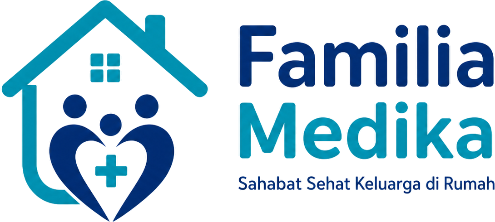

Dokumen ini telah ditandatangani secara elektronik oleh :
Triosep Satrio Wijaya, A.Md.Kep
STR II00001596047243
Perawat Mitra · Familia Medika

Dokumen ini telah ditandatangani secara elektronik oleh :
Triosep Satrio Wijaya, A.Md.Kep
STR II00001596047243